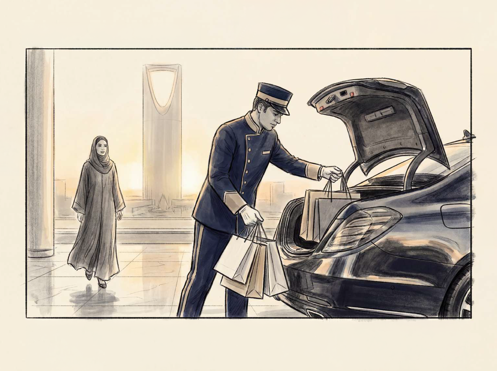
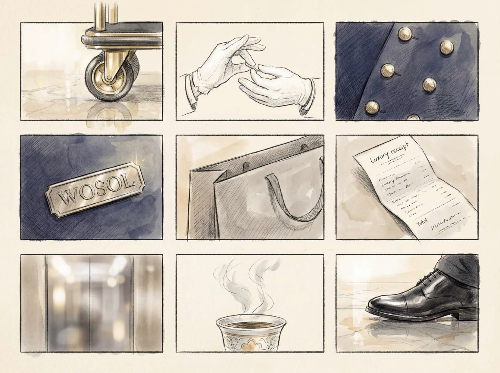
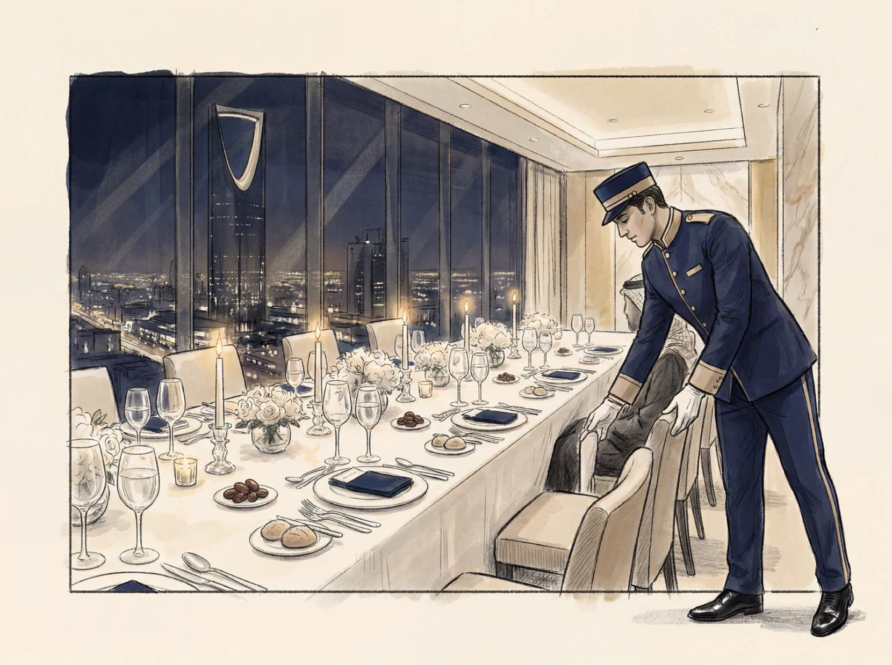
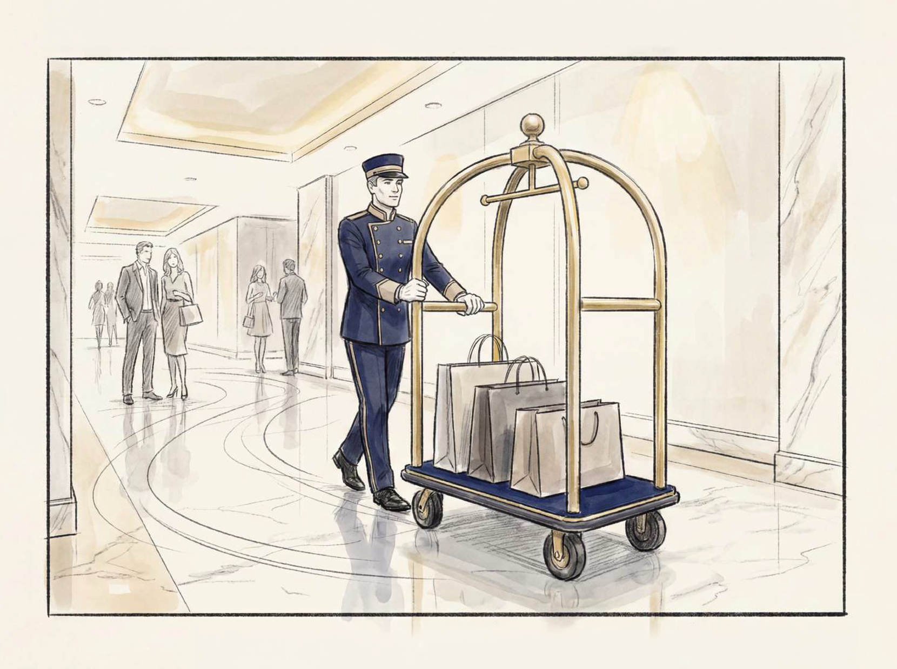
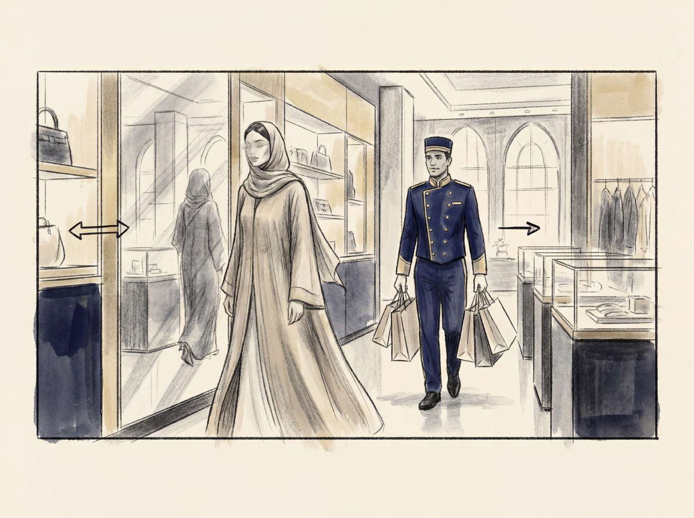
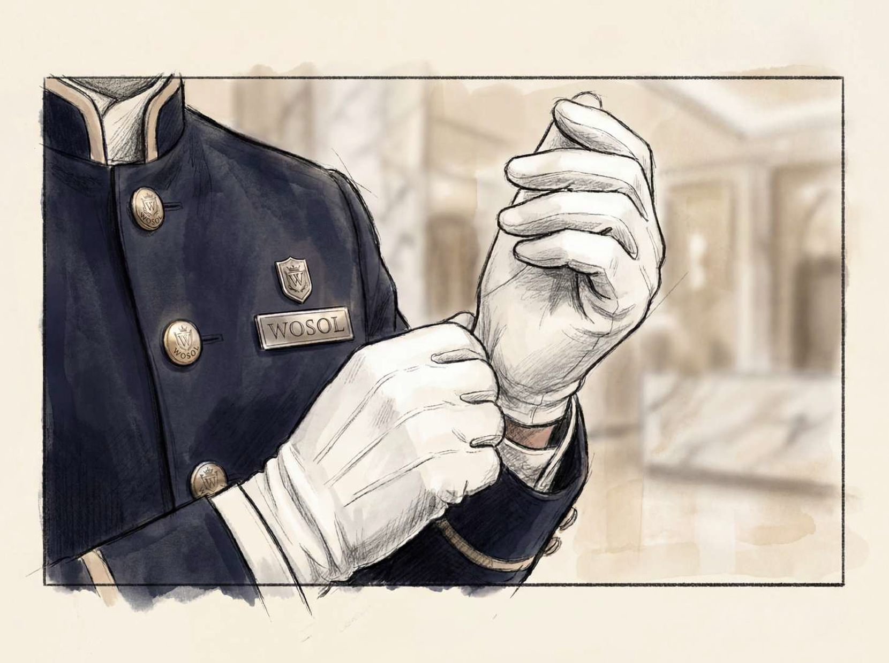
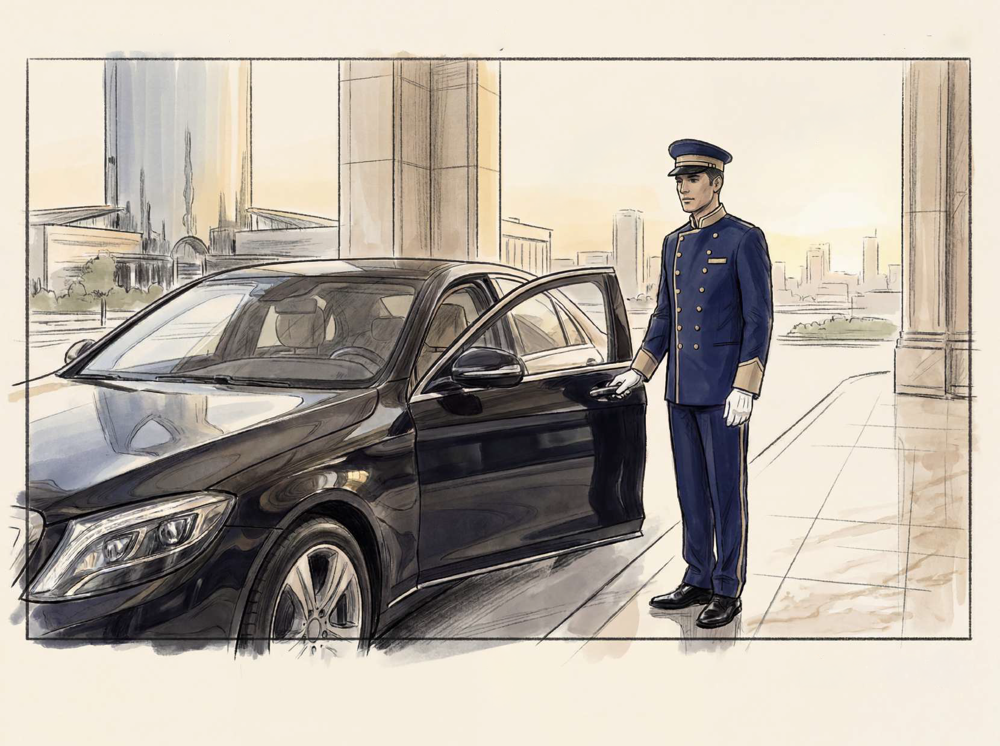
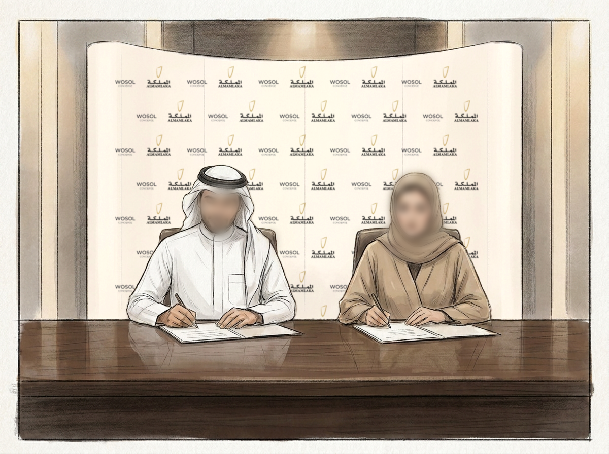

THE HANDLED LIFE
Luxury is no longer more. It is less to carry.
In a city moving fast, some people are not searching for more luxury. They are searching for freedom from thinking. WOSOL becomes the quiet hospitality layer inside Kingdom Centre: present before the request, precise during the moment, invisible after the care is complete.

The Door
الدخول إلى عالم آخر
Massive luxury doors slowly open. Warm golden light appears. The guest enters another world.

The White Gloves
الدقة قبل الطلب
Extreme detail shots. White gloves. Gold buttons. Luxury precision.

The Movement
حركة بلا احتكاك
Luxury luggage trolley moving through Kingdom Centre. Soft reflections. Elegant motion.

Private Shopping
الحياة حين تصبح أخف
Elegant Saudi woman shopping. Butler carries everything silently.

The Concierge Desk
قبل أن تسأل
Reservations. Coordination. Luxury hospitality desk.

The Details
حساسية التفاصيل
A sensory montage of gloves, gold buttons, marble, espresso, textures, and reflections.

The Final Delivery
اكتمال العناية
Shopping bags carefully arranged into luxury car. Golden hour reflections.

The Handled Life
الحياة المُعتنى بها
You leave without the weight of a list. The bags are in the car. The reservation is confirmed. The path ahead is clear. WOSOL did not add to your day — it quietly removed what would have taken from it. That is the handled life.
"Luxury is feeling handled."
WOSOL Concierge does not add noise to Kingdom Centre. It adds certainty: the quiet confidence that every movement, reservation, purchase, transfer, and private moment has already been considered.